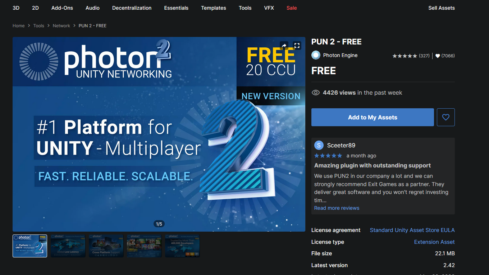
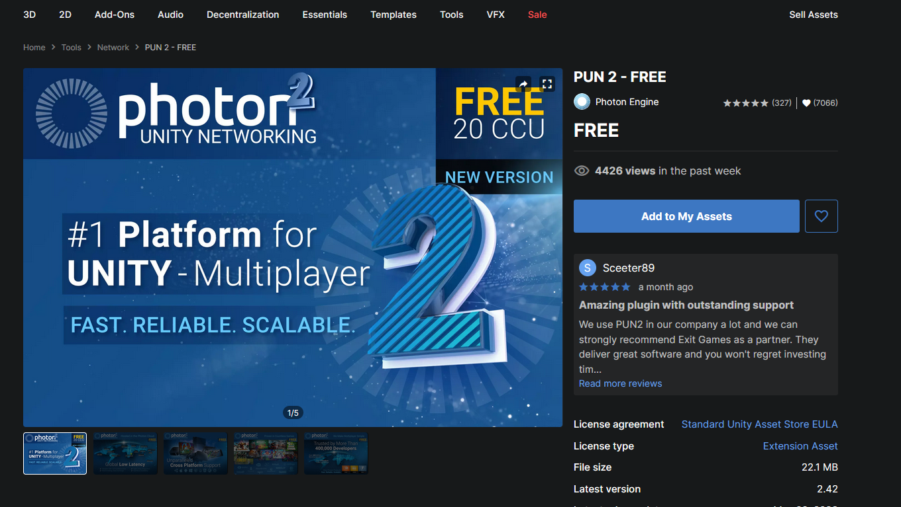

I then imported the Photon unity asset called PUN 2 freehere

I created a new scene and named it Loading with a Loading text. I created an empty gameobject called "ConnectToServer" and attached a script called "ConnectToServer" that calls PhotonNetwork.ConnectUsingSettings()
I then imported the Photon unity asset called PUN 2 freehere

I created a new scene and named it Loading with a Loading text. I created an empty gameobject called "ConnectToServer" and attached a script called "ConnectToServer" that calls PhotonNetwork.ConnectUsingSettings()
 I added a Lobby scene and created two inputfields and buttons for create and join. Added to callback functions into ConnectToServer script. They are OnConnectToMaster() and OnJoinedLobby(). This allowed the loading scene to load into lobby
I added a Lobby scene and created two inputfields and buttons for create and join. Added to callback functions into ConnectToServer script. They are OnConnectToMaster() and OnJoinedLobby(). This allowed the loading scene to load into lobby
 Now that was a basic way to connect to the lobby. I wanted to allow users to enter their names. So I started following this tutorial here. In my start menu I removed the one and two player button. I replaced them with an input field for the user to enter their name and a button to connect to the lobby. The PhotonNetwork.ConnectUsingSettings(); gets called if the user has entered a name and pressed the connect button. The button text will display "Connecting..." while trying to enter the lobby.
Now that was a basic way to connect to the lobby. I wanted to allow users to enter their names. So I started following this tutorial here. In my start menu I removed the one and two player button. I replaced them with an input field for the user to enter their name and a button to connect to the lobby. The PhotonNetwork.ConnectUsingSettings(); gets called if the user has entered a name and pressed the connect button. The button text will display "Connecting..." while trying to enter the lobby.
 A component called PhotonView is added to the player prefab. This component is needed to be connected on to the server. Any prefab to be spawned on the network must be in the Resources folder. So I moved the Player prefab into the Resources folder
A component called PhotonView is added to the player prefab. This component is needed to be connected on to the server. Any prefab to be spawned on the network must be in the Resources folder. So I moved the Player prefab into the Resources folder
 In the player script. I check if the PhotonView isMine. This will let the user control their own players
In the player script. I check if the PhotonView isMine. This will let the user control their own players
 To sync the position of the players across the network, a component called "PhotonTransformViewClassic" is added to the player and the "SynchornizePosition" field is enabled
To sync the position of the players across the network, a component called "PhotonTransformViewClassic" is added to the player and the "SynchornizePosition" field is enabled
 Now I want to spawn the players in the game. I create a SpawnPlayer script and using PhotonNetwork.Instantiate
Now I want to spawn the players in the game. I create a SpawnPlayer script and using PhotonNetwork.Instantiate
 The players movement are synched across the game. However, both are treated as Player1 and the enemies/bullets are not on the network yet. You can't see the other player's bullets and if the other player gets destroyed you won't notice. However, if the other player's network drops, it will disappear from your game
Another problem was that both players spawn in the same location. To resolve this, I do a check if it is IsMasterClient, spawn player on the left spawn point. Otherwise, spawn in right spawn point. I will only have max two players eventually so this way works
The players movement are synched across the game. However, both are treated as Player1 and the enemies/bullets are not on the network yet. You can't see the other player's bullets and if the other player gets destroyed you won't notice. However, if the other player's network drops, it will disappear from your game
Another problem was that both players spawn in the same location. To resolve this, I do a check if it is IsMasterClient, spawn player on the left spawn point. Otherwise, spawn in right spawn point. I will only have max two players eventually so this way works
 I wanted to see what happens when I have internet turned off. It appears the OnJoinedLobby() callback function cannot be called but OnConnectedToMaster() will still be called-this may be because according to this documentation PhotonNetWork.IsMasterClient is always true when OfflineMode is set to true. With internet turned off, if I press 1 player button, lobby will load and game functions in editor. However, this means OnJoinedLobby() won't get called. I will revisit this again another time. Going to try to get the other items working online and shared across two players such as background/enemies/scoreboard
It was time to sync up the enemies. I moved all the enemies and explosions prefab to the Resources folder. On all of them I added the PhotonView component so they can be read across the network. Also added the PhotonTransformViewClassic and enabled synchronize Position. When I made the build and tested, the client will throw an error when trying to get the explosions:
I wanted to see what happens when I have internet turned off. It appears the OnJoinedLobby() callback function cannot be called but OnConnectedToMaster() will still be called-this may be because according to this documentation PhotonNetWork.IsMasterClient is always true when OfflineMode is set to true. With internet turned off, if I press 1 player button, lobby will load and game functions in editor. However, this means OnJoinedLobby() won't get called. I will revisit this again another time. Going to try to get the other items working online and shared across two players such as background/enemies/scoreboard
It was time to sync up the enemies. I moved all the enemies and explosions prefab to the Resources folder. On all of them I added the PhotonView component so they can be read across the network. Also added the PhotonTransformViewClassic and enabled synchronize Position. When I made the build and tested, the client will throw an error when trying to get the explosions: ArgumentOutOfRangeException: Index was out of range. Must be non-negative and less than the size of the collection.
The explosions pool objects were 0 for the client.